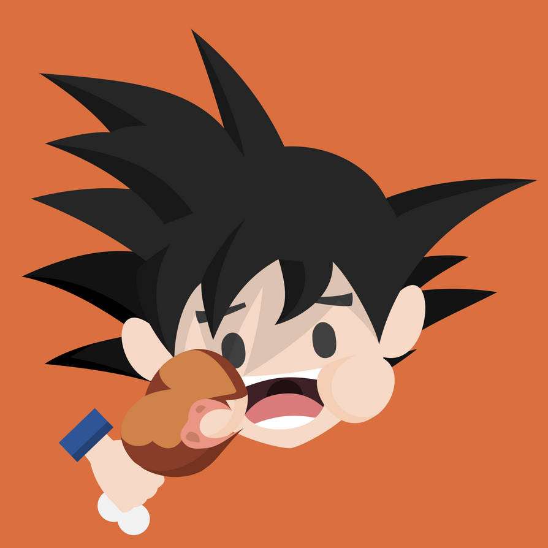
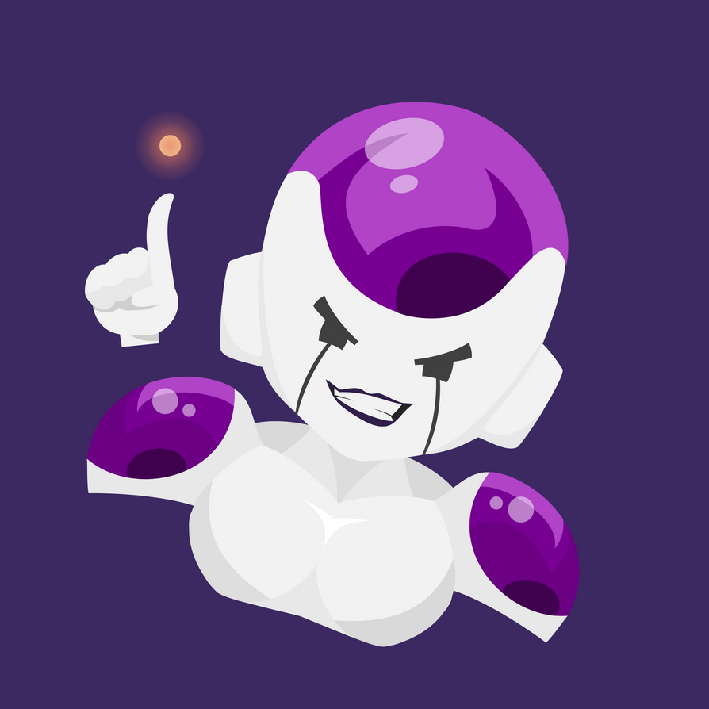
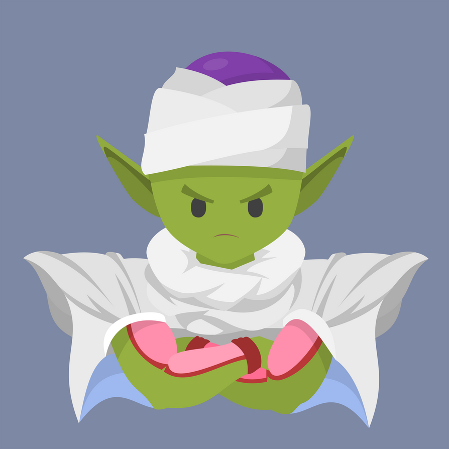
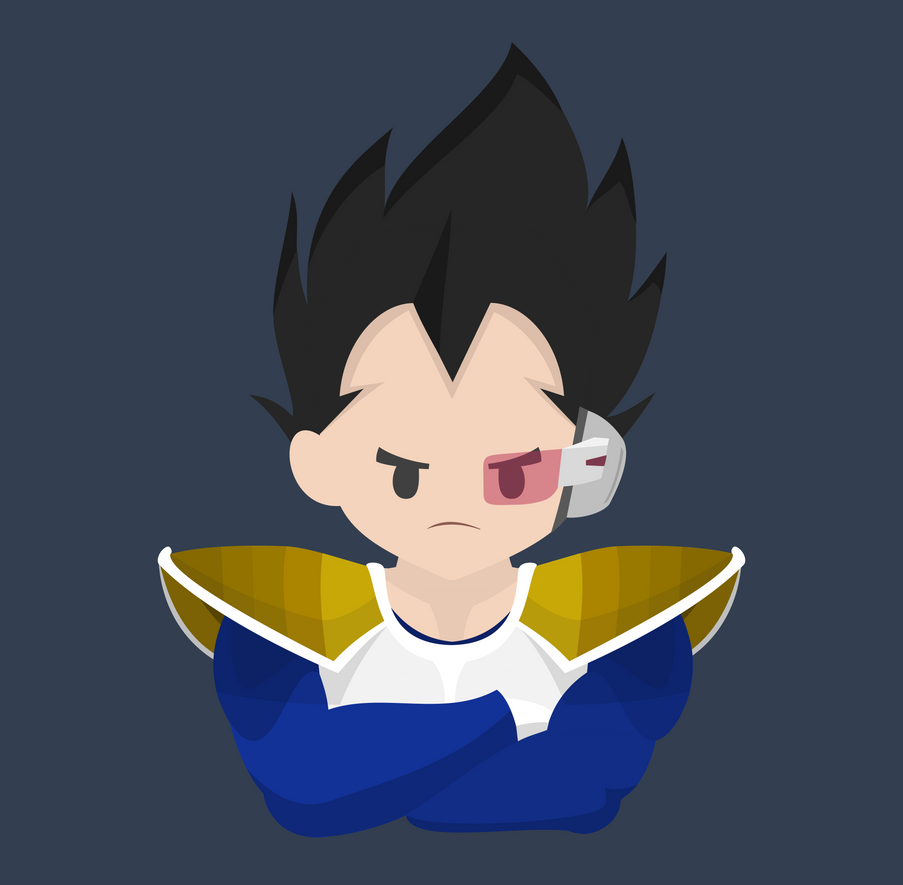
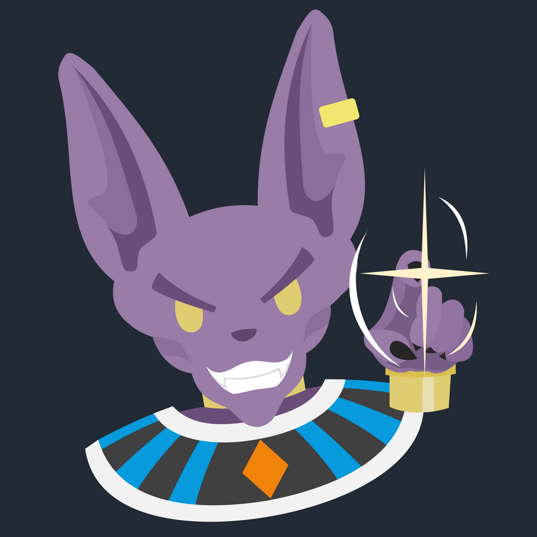

Goku
100% Saiyan
Son Goku (摂そんごくう Son Gokū), born Kakarot (カカロット Kākaroto), is a Saiyan raised on Earth and the main
protagonist of the Dragon Ball series. He is the second born, as well as youngest son and child of
Bardock and Gine, the husband of Chi-Chi, and the father of Gohan and Goten. Originally sent to Earth by
his parents as an infant, Kakarot was adopted by Grandpa Gohan and renamed Son Goku.

Frieza
Saiya-man
Frieza (Japanese: フリーザ, Hepburn: Furīza), also known and spelled as Freeza in Funimation's English
subtitles and Viz Media's release of the manga, is a fictional character and the primary antagonist in
the Dragon Ball manga series created by Akira Toriyama. He makes his debut in Chapter #247: "Dark Clouds
Swirl Over Planet Namek", first published in Weekly Shōnen Jump magazine on October 24, 1989,[1] as the
main antagonist of his eponymous saga, depicted as a galactic tyrant feared as the most powerful being
in the universe.

Piccolo
100% Namekian
Piccolo (Japanese: ピッコロ, Hepburn: Pikkoro) is a fictional character in the Japanese Dragon Ball media
franchise created by Akira Toriyama. He made his appearance in chapter #161 "Son Goku Wins!!", published
in Weekly Shōnen Jump magazine on February 9, 1988, as the reincarnation of the evil King Piccolo,
who was positioned as a demonic antagonist of the series. However, it is later revealed that he is in
fact a member of an extraterrestrial humanoid species called Namekians from an exoplanet called Namek,
those able to create the series' eponymous wish-granting Dragon Balls.

Vegeta
100% Saiyan
Vegeta (Japanese: ベジータ, Hepburn: Bejīta) (/vəˈdʒiːtə/ və-JEE-tə), fully referred to as Prince Vegeta IV
(ベジータ 王子 四世, Bejīta-ōji Yon-sei), is a fictional character in the Japanese franchise Dragon Ball
created by Akira Toriyama. Vegeta made his appearance in chapter #204 "Sayonara, Son Goku", published in
Weekly Shōnen Jump magazine on January 7, 1989, seeking the wish-granting Dragon Balls to achieve
immortality.

Beerus
100% Human
Beerus, the God of Destruction (Japanese: 破壊神ビルス, Hepburn: Hakaishin Birusu) is a fictional character
from the Dragon Ball franchise created by Akira Toriyama. Beerus made his debut appearance in the 2013
film Dragon Ball Z: Battle of Gods as the antagonist and returned as a supporting character in Dragon
Ball Z: Resurrection 'F', as well as one of the main characters in Dragon Ball Super. He is a deity
known as a God of Destruction and resembles a purple cat wearing traditional Egyptian clothing and
ornaments, whose occupation is to maintain balance in the universe by destroying, in contrast to the
Supreme Kais who create and preserve.